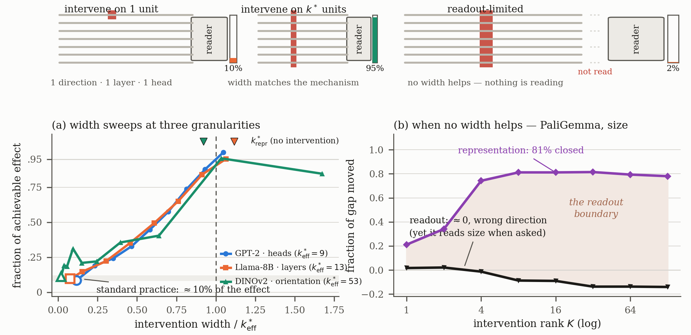
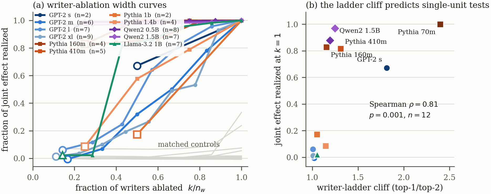
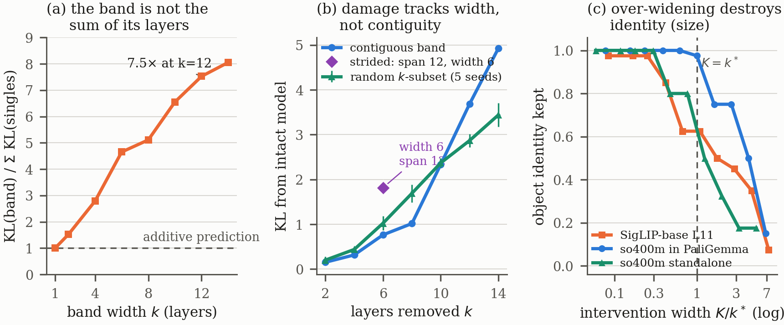
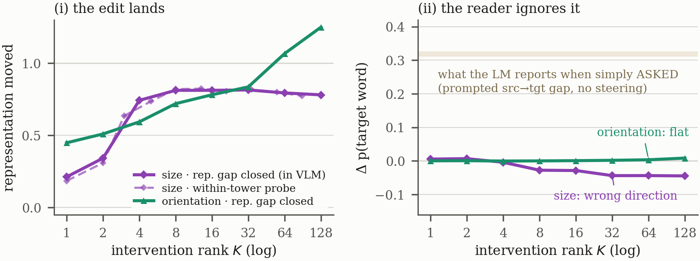

When an intervention on one direction, one layer, or one attention head changes nothing, the usual conclusion is that the part is not involved. Across three unrelated systems, that test recovers only about a tenth of the effect it is looking for. A width-1 null is an underpowered test, not evidence of absence.

The standard unit recovers about 10%
Widening each intervention to its mechanism's width k* recovers 95–100% of the achievable effect.
Abstract
Interpretability-driven discovery rests on interventions: a part is credited with a function when perturbing it changes behavior, and dismissed when nothing happens. We show that the field's standard intervention unit (one direction, one layer, one attention head) recovers only ≈10% of the achievable causal effect in three unrelated testbeds, one task each: rank-1 steering in vision encoders (0.111), single-layer ablation in Llama-3.1-8B (0.096), and single-head sufficiency in GPT-2's IOI circuit (0.086). The mechanism's width k* can be measured before intervening, and widening the intervention to k* recovers 95–100%. The effect is about width itself: a 12-layer band does 7.5× the additive damage prediction, random subsets track contiguous bands, and pushing past k* destroys object identity. Across 12 language models, whether a single-unit test works is predicted by a cliff in the writer-score ladder (ρ = 0.81). Width is necessary, not sufficient: at a documented readout boundary, 81% of a representation gap closes while the consumer's output moves ≈0, though it reads the attribute when prompted. A negative result at standard width is an underpowered test, not evidence of absence; a cheap protocol (sweep width, compare k*repr to k*eff, run matched controls) tells the difference before a discovery claim is made.
Two widths, three verdicts
k*repr is read from the representation alone, with no intervention. k*eff is the smallest intervention reaching 95% of the achievable effect. Their relation classifies a failed intervention:
k*eff exists and sits near k*repr. The standard test was simply too narrow; widening fixes it. DINOv2 orientation: 49 vs 53.
The representation moves, the consumer does not. No width helps; change the handle. PaliGemma: 81% of the gap closed, captions invariant.
Small k*repr but no saturating sweep: a curved, nearly one-dimensional manifold a linear handle grips poorly. DINOv2 size peaks at 0.40.
Varying all four analytic thresholds over 81 settings never moves a system between these classes (paper, Appendix B).
Role criteria are width choices too
Counting heads that pass a role criterion (here, previous-token score ≥ 0.5 × max) is the obvious representation-side width for attention heads. Selecting heads with no role score, by greedily adding whichever upstream head does the most damage jointly with those already chosen, shows the count is not reliable in either direction.
| Model | Criterion heads | k*eff (joint greedy) | Overlap | Criterion set's share | Width 1 |
|---|---|---|---|---|---|
| GPT-2 small | 2 | 10 | 2/2 | 0.51 | 0.34 |
| GPT-2 medium | 6 | 21 | 6/6 | 0.43 | 0.03 |
| GPT-2 large | 7 | 14 | 5/7 | 0.32 | 0.03 |
| GPT-2 XL | 9 | 22 | 0/9 | 0.20 | 0.01 |
| Pythia-410m | 5 | 2 | 4/5 | 0.98 | 0.80 |
| Pythia-1.4b | 4 | 8 | 4/4 | 0.85 | 0.24 |
| Llama-3.2-1B | 7 | 8 | 3/7 | 0.70 | 0.33 |
In GPT-2 the criterion finds the right heads first but stops at 20–51% of the mechanism; in GPT-2 XL it shares none of the first nine. Measured against this criterion-free mechanism, the writer-ladder cliff predicts width-1 success with ρ = 0.89 (p = 0.007, n = 7).
Before reporting an interventional null
- Measure k*repr from the representation, with no intervention.
- Sweep width past it and locate k*eff, the width reaching 95% of the achievable effect.
- Run matched controls: random units of equal width and magnitude, plus a prompted capability check on the consumer.
- Classify: saturates near k*repr → width-limited; representation moves but the consumer does not → readout-limited; linear handles fail on a low-stable-rank manifold → basis-limited. Only then interpret the null.
More results



Citation
@inproceedings{yadav2026narrow,
title = {Your Intervention Was Too Narrow: Mechanism Width as a
Precondition for Interpretability-Driven Discovery},
author = {Yadav, Sumit and Joshi, Basanta},
booktitle = {NeurIPS 2026 Workshop on Interpretability for Discovery},
year = {2026},
note = {Non-archival}
}